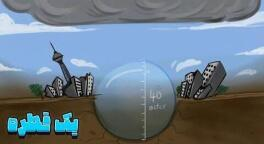

اگر همهٔ باران یک ابر یک قطره میشد چه میشد؟

یک لحظه هرچه فکر کردی بریز دور، و به این فکر کن. چه میشود اگر طبیعت یک روز از دندهٔ چپ بلند شود و فقط یک اپسیلون فرمول و قوانین فیزیکیاش را برای باران باریدن جابهجا کند؟ فقط تصور کن به جای آن بارانهای خوشگل و نمنم، یا حتی رگبار بهاری که صفایی به آدم میدهد، کل آب یک ابر خفن غولپیکر، از همان سیاهپشمالوها، یکهو تصمیم بگیرد دیگر با قطرههای ریزهمیزه بازی نکند. قهر کند و بگوید یا همهاش را با هم میریزم، یا هیچی. و کل وجودش را جمع کند در یک دانه قطرهٔ غولپیکر.
بله، درست شنیدی. یک قطره. اما چه قطرهای؟ یک هیولای آبی به وزن میلیونها تن. یک غول بیشاخودم آبکی که قرار است از آن بالا روی سر ما آوار شود. مغز آدم رسماً خطای ۴۰۴ میدهد. به نظرت چه بلایی سرمان میآید اگر به جای قطرههای ریز، یک قطرهٔ واحد، مجموع همان قطرهها، یکباره از ابر خارج شود؟ فکرش هم ترسناک است. توی خیابان داری راه میروی، یکهو یک قطرهٔ آب غولپیکر بخورد توی سرت.
چرا در حالت عادی اینطور نمیبارد؟
قبل از اینکه برویم سراغ اینکه این قطرهٔ مگاولپیکر چه به پا میکند، یک سؤال خیلی خیلی مهم پیش میآید. آقا، چرا اصلاً چنین اتفاقی در حالت عادی نمیافتد؟ چرا هر وقت باران میآید یک عالم قطرهٔ فسقلی و گوگولیمگولی روی سرمان میریزد، نه یک هیولای خیس که بخواهد کل شهر را قورت بدهد؟
هر کدام از این قطرهها قطرشان چقدر است؟ فوقش اگر خیلی خودشان را تحویل بگیرند، میرسد به ۴ یا ۵ میلیمتر. یعنی از یک نخود هم کوچکتر. حالا چرا گندهتر از این نمیشوند؟ اینجا دو مأمور مخفی طبیعت وارد عمل میشوند. یکی کشش سطحی آب، که مثل چسب مایع هی سعی میکند قطره را گرد و قلمبه و ناز نگه دارد. از آن طرف مقاومت هوا مثل یک قلدر ایستاده که تا قطره یککم از حدش بزرگتر شود، یک پسگردنی جانانه به آن بزند و بگوید کجا با این عجله؟ شتلق، قطره میشکند و تبدیل میشود به چند قطرهٔ کوچکتر. یعنی اصلاً هوا خودش نمیگذارد قطرهها زیادی چاق و چله شوند.
تازه خود ابر آن بالا بیکار ننشسته. در دل ابرها، مخصوصاً ابرهای بارانزا، چیزی داریم به اسم نیروی برشی. انگار یک میکسر غولپیکر انداختهاند آنجا. هی آب و بخار را هم میزند. باد میآید، جریانهای هوا بالا و پایین میروند، و این تلاطم باعث میشود قطرهها به هم بخورند، یککم بزرگ شوند، ولی قبل از اینکه خیلی گنده شوند دوباره تکهپاره شوند. خود سیستم ابر طوری طراحی شده که نگذارد آب یکجا جمع شود و تبدیل به یک بمب آبی شود. واقعاً دم طبیعت گرم، با این مهندسی دقیق.
اگر قانون را دور بزنیم
اما کار ما بررسی «چی میشد اگر»هاست. پس بیخیال این قانون و قاعدههای دستوپاگیر فیزیک شویم. فرض کنیم یک روز یک ابر کومولونیمبوس تصمیم بگیرد به همهٔ این قوانین پشت پا بزند. در چنین ابری میدانی چقدر آب میتواند قایم شده باشد؟ صحبت از چیزی حدود ۱ میلیون تن آب است. یعنی یک میلیارد کیلوگرم آب خالص.
اگر این همه آب بشود یک قطرهٔ گرد و قلمبه، قطرش چقدر درمیآید؟ اول حجم را پیدا کنیم. چگالی آب حدود ۱۰۰۰ کیلوگرم بر متر مکعب است. پس آن یک میلیارد کیلوگرم، حجمی معادل ۱ میلیون متر مکعب پیدا میکند. حالا این حجم را بریز در قالب یک کره. حجم کره چهارسوم پی ضرب در شعاع به توان سه است. اگر با این فرمول شعاع را حساب کنیم، میرسیم به عددی حدود ۶۲ متر. قطرش دو برابر شعاع است؛ یعنی چیزی حدود ۱۲۴ متر.
بله، درست شنیدی. یک قطرهٔ آب با قطر ۱۲۴ متر. چیزی به ارتفاع یک ساختمان ۳۰ تا ۴۰ طبقه. یک برج میلاد آبی که آن بالا معلق ایستاده و دارد جاذبه را به چالش میکشد. اصلاً میتوانی چنین چیزی را در آسمان بالای سرت تصور کنی؟
این برج آبی متحرک با این وزن و ابعاد، اصلاً چطور میخواهد آن بالا تکه و سالم بماند؟ آن کشش سطحی که گفتیم برایش مثل یک شوخی بیمزه میماند. مثل اینکه بخواهی با یک نخ دندان یک فیل را از زمین بلند کنی. قبل از اینکه اصلاً به افتادن فکر کند، همان بالا وا میرود و صد تکه میشود. پس اینجا مجبوریم یک بار دیگر از آن نیروی جادویی که اول گفتیم کمک بگیریم. فرض کنیم یک چسب همهکاره این قطره را سفت و محکم نگه داشته که از هم نپاشد.
سقوط
حالا که این غول آبی به زور سر پا ایستاده و آمادهٔ سقوط است، از کجا قرار است بیفتد؟ معمولاً ابرهای بارانزا در ارتفاع حدود ۲ کیلومتری از سطح زمین تشکیل میشوند. قطرههای باران معمولی ته تهش با سرعت ۸ متر بر ثانیه میآیند پایین، یعنی حدود ۳۰ کیلومتر بر ساعت. اما این رفیق جدید ما چه؟ این دیگر آن قطرهٔ کوچولوی نازنازی نیست که باد با آن بازی کند. با آن جرم، مقاومت هوا برایش خیلی کماثرتر است. شتاب میگیرد. سرعتش هی بیشتر و بیشتر میشود، مثل ماشینی که پا را تا ته روی گاز گذاشته.
اگر مقاومت هوا را کنار بگذاریم، از ارتفاع ۲ کیلومتر سرعت برخورد نزدیک ۲۰۰ متر بر ثانیه میشود. در این سناریو، اگر نزدیک ۲۵۰ متر بر ثانیه حساب کنیم، میشود حدود ۹۰۰ کیلومتر بر ساعت. این دیگر باران نیست. این یک موشک آب است که با سرعت یک هواپیمای جت آمده مهمانی.
لحظهٔ برخورد
و حالا لحظهٔ برخورد. بوم. انرژی آزادشده از برخورد این قطرهٔ یکمیلیونتنی با سرعت ۲۵۰ متر بر ثانیه حدود ۳٫۱ × ۱۰۱۳ ژول است. این انرژی معادل انفجار حدود ۷٫۴ ملیونتن است. بمبی که در هیروشیما ترکید حدود ۱۵ کیلوتن قدرت داشت. یعنی این قطرهٔ باران، در یک چشم به هم زدن، نزدیک صدها برابر آن انرژی را روی یک نقطه از زمین خالی میکند. عدد بزرگ است، ولی آن «میلیون تن» که گاهی در حرف میآید، هزار برابر بزرگتر از حساب واقعی این برخورد است.
اگر این سونامی عمودی بخواهد بیفتد وسط اقیانوس، موجی درست میکند که میتواند از خیلی سازههای ساحلی بلندتر باشد و شهرهای کنار دریا را تهدید کند. وای به لحظهای که این هیولای آبی تصمیم بگیرد روی خشکی فرود بیاید. مثلاً صاف بیفتد وسط یک شهر پرجمعیت مثل تهران، نیویورک یا توکیو.
اول از همه، نقطهای که قطره به زمین میخورد یک گودال وحشتناک درست میشود. چالهای به عمق چندین متر، شاید دهها متر، و با قطری در حد یک استادیوم. انگار یک شهابسنگ غولپیکر خورده به زمین. ساختمانهایی که خیلی نزدیک نقطهٔ برخورد باشند در کسری از ثانیه از هم میپاشند. موج حاصل از برخورد میتواند شیشهها را تا دهها کیلومتر آنطرفتر خرد کند و بپاشاند در هوا. تصور کن در خانه نشستهای و چای میخوری. یکهو شیشهها با صدای مهیبی میشکنند. چرا؟ چون باران آمده.
فکر کردی تمام شد؟ نه. این تازه اول کار است. آن یک میلیون تن آب، یک اقیانوس معلق، بعد از برخورد با آن سرعت به اطراف پاشیده میشود و یک سیلاب آنی راه میاندازد. دیواری از آب که مثل قطار تندرو پیش میرود و هرچه سر راهش است، از ماشین و اتوبوس تا درخت تنومند، مثل اسباببازی با خودش میبرد. کلمهٔ فاجعه برایش کم است. این یک روز سخت آبی به تمام معناست.
طبیعت خیلی عاقلتر و مدیرتر از این حرفهاست که اجازه بدهد چنین انرژیای یکجا جمع شود و یکهو مثل بمب خالی شود. حتی در سهمگینترین طوفانها، آب را با ملاحظه، قسطی و کمکم به زمین میفرستد. اگر قرار بود باران از اول این شکلی ببارد، نه از نسل دایناسورها خبری بود و نه از ما. شاید خود سیاره هم حالا یک توپ گلی بیروح بود که در فضا ول میچرخید. دم همان قطرههای فسقلی گرم. تا فکر بعدی، کنجکاو بمان.